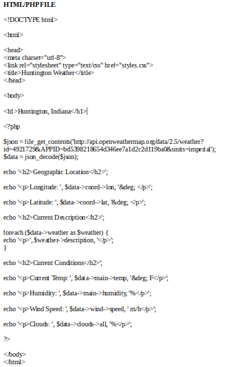
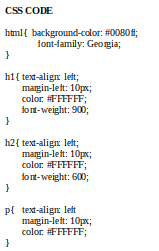
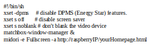
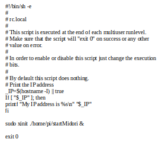
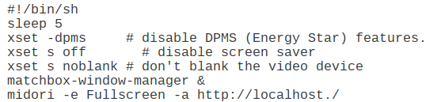

Install NOOBS Operating System from Raspberry Pi’s Website. This will result in a .zip file. You will need to unzip the file and drag the contents onto your microSD card. The link for NOOBS can be found on the link below.
www.raspberrypi.org/downloadsPlug in your Raspberry Pi power supply cord after your mouse, keyboard, mouse, and monitor are connected.
Select Raspian as your Operating System for your Raspberry Pi to use and complete the installation process.
Register for a Unique API Weather Key from OpenWeatherMap.org. Save this developer key for use later on in the project. The link to download the API key can be found below
www.openweathermap.org/apiApache is a web server application which can be installed on the Raspberry Pi to allow it to serve web pages. On its own, Apache can serve HTML files over HTTP, and, with additional modules, can serve dynamic web pages using scripting languages such as PHP. Run the command below in the terminal to install Apache.
sudo apt-get install apache2 -y
After installing apache, one default file called index.html is added to the directory /var/www/html. Because, by default, this file is owned by the root directory, you have to run the two commands below to change the file ownership to your own user.
sudo chown pi: index.html
This module allows your Apache server to be able to process PHP files, you have to install the latest version of PHP and the PHP module from Apache by running the command below in the terminal.
sudo apt-get install php libapache2-mod-php -y
Remove Default index.html file and create new PHP file by using the default graphical editor on the Raspberry Pi called Leafpad by running the two commands below.
sudo rm index.html
sudo leafpad index.php
Below is the HTML, CSS, and PHP code I used for the project. You will need to update the link in your PHP code to use your own personal API developer key and to display the weather in the location of your choice.
 After creating your files, using the command line, move these files to the /var/www/html directory.
In order to be able to access your own location's data, you have to update the link in the PHP code to use your own developer API key and to use your location's specific ID. A complete list of location IDs can be found in a file located in the link below.
www.openweathermap.org/appidInstall Midori. Midori is a lightweight web-browser that has a kiosk mode suited for startup.
sudo apt-get update and sudo apt-get install midori
Install Matchbox. Matchbox is a lightweight window manager that is suited for command line startup.
sudo apt-get install matchbox
The next step is to ensure that the xset commands are workign correctly. This may not do anything if it is already updated.
sudo apt-get install x11-xserver-utils
Create a file in /home/pi called startMidori (cd /home/pi, then sudo nano startMidori.txt). Add the information below to the file.
The final part is to edit the file that will execute this on startup. Edit the /etc/rc.local file (go all the way out to the root - use sudo nano rc.local). Most of the text will be there, make these changes to appear like this:
In order to give the internet time to connect before it tries to retrieve data from the OpenWeatherMapAPI database, you must add a simple line of code to your startMidori file. Navigate to this file and type sleep 5 on a separate line below the first comment as shown below.
In order to make the browser auto refresh after a certain number of seconds, simply open up the startMidori file and type -i 300 at the end of the last line of text. Also, if you want to change how frequently it refreshes, simply change the number after the -i command.
In order for your Raspberry Pi to be able to automatically start up the weather display when it is turned on, you must set adjust your Pi to start up in the command line instead of the GUI. This can be done by entering the commands below.
sudo raspi-config
Go to Boot Options, Select Desktop/CLI, and Select Console
On the Raspberry Pi web server, the final product could then be displayed with the web browser by typing http://localhost in the URL.
To refresh the web page at any time, simply press the F5 key
To exit out of the weather display to the command line, press Ctrl-Alt-F1
After navigating back to the command line, type startx to start up the standard GUI for the Raspberry Pi
www.instructables.com/id/Raspberry-Pi-Web-Server-Weather-Interface
www.www.raspberrypi.org/documentation/remote-access/web-server/apache.md
stackoverflow.com/questions/25575466/how-to-use-openweathermap-api-key
If you wanted to spend more time making additions to this project, a few possible ideas are found in the list below.